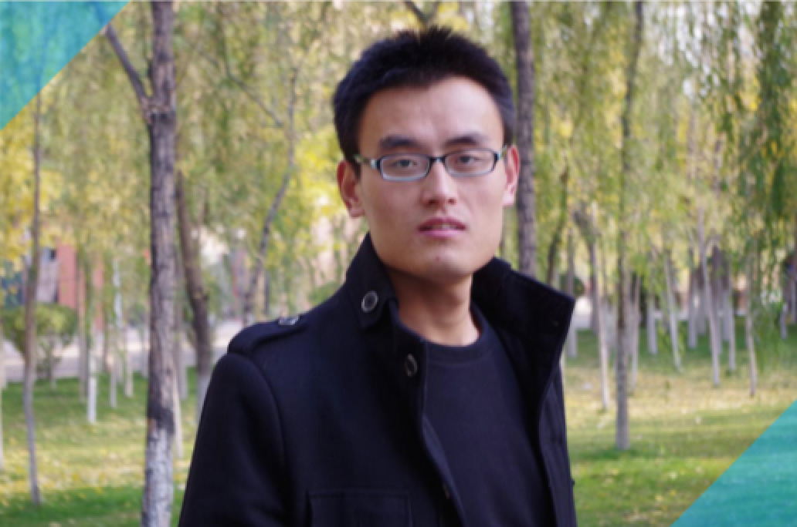

-
刘洋
信息安全部余自西北边城而来，姓刘，名洋，未有字，自号青山，入世迄今二十有五矣。少时好读书，尝语父曰：“余生平所愿唯三事耳，一曰天下太平以享人间之乐，二曰读书万卷以正浩然之心，三曰远行万里以明百态之世。”遂及舞象之年，求学千里之外，亦曾远游四方。
夫心无远虑者，虽如脱缰之驹，任尔驰骋，然终有力竭之时哉!孟德尝言：“老骥伏枥，志在千里。” 余当铭感五内，以儆己身。彼花甲之年尚有壮志，况余年少，当效其远志，竭力为之！
余虽不才，愿献愚驽而事铁路，若能助之兴盛，则人不枉生，岂为憾哉！
喜欢跑步的朋友可以加我好友
Nike+Running
liuyangmko0405@126.com

代娇
信息安全部衡中闯出来的疯狂
北交迈过来的收敛
爱读书、电影、动漫
爱阳光，爱蓝天
爱奔跑，爱运动
喜欢尝试没做过的事情
喜欢领略不同地域的人物风情
愿玄心，洞见
愿妙赏，深情
-
路伟康
技术支持部
嘿嘿嘿，大家好！我来自美丽泉城山东济南，酷爱音乐，喜欢运动，加微信有惊喜噢。

-
马腾
技术支持部马腾，山西运城人，毕业于兰州理工大学，爱好多多。一个不爱多说话的人，因为一个未来的成功者都是像我一样一切都要思考过再进行；有一副象征着我学问的蓝色眼镜；有一个名人名：马(化)腾；还当过演员，差点还进了影视圈。

屈永康
技术支持部屈永康，永康永康，永远健康，这是父母对我的美好祝福。朋友是天，朋友是地，有了朋友才能顶天立地；朋友是风，朋友是雨，有了朋友才能呼风唤雨。希望和信息中心大家庭的每一个员工成为好朋友，祝愿所有朋友永远健康。

李佳豪
信息生产调度部球场上挥汗如雨，活动上积极参与，工作上努力奋取——我是来自信息生产调度部的2016级新员工李佳豪。我来自北京市密云区，是一个酷爱运动、阳光乐观的大男孩，很开心来到信息中心这个大家庭，同时我很庆幸能遇到这么多优秀的同事们，相信以后的工作和学习中会遇到更多、更精彩的你们！
-
任宸莹
网络管理部
我叫任宸莹，来自网络管理部。典型的工科女，却偏偏爱好文艺，爱一切与音乐有关的事物，爱读书写作旅行，爱简单，爱热闹，爱交朋友。外表与资质平凡，却偏偏有一颗不甘平凡的心，渴望用自己的努力实现梦想，即使困难重重，也要在自己的人生道路上跌跌撞撞而又不失姿态的走下去。
-
宋健
网络管理部 宋健，回族，网络管理部。
宋健，回族，网络管理部。
爱好英语口语，跑步，游泳，乒乓球，读书，旅行，牛羊肉。
学生时代睡过北京大马路，站过上海高温岗，游过雨后地下室。
真诚做人，认真做事，用心工作，主动学习。
仰望星空，脚踏实地，不忘初心，明天更好。
很荣幸加入如此优秀的团队，愿今后与更多优秀的你们成为好朋友。

王爱丽
城市轨道交通系统
安全保障技术
国家工程实验室王爱丽 15210583528
城市轨道交通系统国家工程实验室
毕业于北京交通大学
喜欢亲近大自然
喜欢一个人静静的做点小学术，曾在《铁道学报》、《中国铁道科学》等期刊发表10余篇论文
不求与人相比，但求超越自己，愿在工作中与各位同事共勉

孙喜利
城市轨道交通系统
安全保障技术
国家工程实验室
我是孙喜利，湖南娄底人，毕业于兰州大学，现在就职于城轨安全保障实验室，平时喜欢魔方、数独、爬山、旅游和睡觉。酷爱吃辣及水果，最爱焖锅、火锅、鸭脖、榴莲和樱桃。梦想是坐着自己公司的车游遍名山，吃遍全国。

于士尧
城市轨道交通系统
安全保障技术
国家工程实验室
嗨，大家好，我是于士尧！来自哈尔滨，毕业于北邮，爱篮球、足球、羽毛球；素描、国画还算熟悉，吉他和丽丽也能弹几首；用爱心做饭，用童心追动漫，用好奇心游玩！也许有一天，我会背着吉他去黄石公园看《海贼王》

孔庆玮
（弘远）
货运管理事业部
孔庆玮
江湖人称ST，女，92年，双鱼座
坐标：北京西直门桥洞底下
职业：铲屎官
副业：程序员+设计师+小说家
毕业院校：北理工+袋鼠国悉尼大学
个人签名：我不在图书馆，就在去图书馆的路上。
PS：楼上那个想背着吉他去黄石公园看《海贼王》的，黄石公园看海贼王确实不错哦，就差吉他了~
-
李楠
（弘远）
现代物流事业部
姓名：李楠
生日：1991.10
兴趣爱好：摄影，游泳，爬山等
毕业院校：北京理工大学
内容：
我非常高兴也非常荣幸的加入到中国铁路信息技术中心这个大家庭中来，这里不仅为我提供了一个成长锻炼、展示自我的良好平台，也让我有机会认识更多的新同事、新朋友。
我初来乍到，还有许多方方面面的知识需要向大家学习。我相信，通过我们彼此之间的相互了解和认识，我们不但会成为事业上一起奋斗的战友，更会成为人生中志同道合的朋友。 
周成
（弘远）
货运管理事业部
恐龙一只，史前生物系，勤快王国公民，信息中心IT程序猿一枚。脸大，眼小，腿短。善良，可是冷漠，怕拖累别人。喜欢唱歌，麦霸类型，在办公室也照k不误。喜欢相声小品，特长是说笑话活跃气氛。喜欢书，买了一堆在家里欣赏但是完全找不到时间看。喜欢美人，女性为佳，如果你够帅，男性也可。思想停留在史前，对王子骑白马公主长头发的观念深信不疑。平生理想是找一只有温柔眼神和相同兴趣的白雪公主一起为史前生物的发展做贡献。有意作我的白雪公主的的人请扫二维码……
-
王小朋
（弘远）
移动装备事业部
姓名：王小朋
微信（qq）530279459
学校：中国石油大学（北京）
爱好：游泳，看小段子
座右铭：人生就像马拉松，获胜的关键不在于瞬间的爆发，而在于途中的坚持。卢元惠
（弘远）
运输营销事业部卢元惠，元旦出生来自河北，毕业于英国杜伦大学，高中理科本科俄语，研究生回归大理科软件的怀抱甚是欣喜。生性开朗，活泼外向，喜欢远足、跑步，也爱旅游、摄影，已游遍欧洲、正走向世界，微信在侧，同好约起来！
任京楠
（弘远）
数据平台事业部
疾风码豪
京楠•索是数据平台的学徒，是一个百折不屈的男人，还是一名身手敏捷的码农，掌握了传说中的御风码术，能够运用风的力量来编写代码。他拿起键盘，在风的陪伴下踏上征程，向着前方那在夕阳下闪耀着的铁路走去。

林晓蕾
（弘远）
质量管理部林晓蕾
质量管理部
毕业于北京工商大学
强守卫，强迫症😂
虽然爱写字、画画，且不咋地，但乐在其中；
虽然爱游泳、狂走，且特来劲，但越来越胖；
虽然爱韩语、韩剧，且停不下，但最爱中国；
虽然爱吃、爱旅行、爱摄影，但qiong…
且行且珍惜❤️
任昕亮
（弘远）
现代物流事业部这个满脸笑（wei）容（suo）的家伙是下面狂魔任昕亮，性别男爱好男，啊不，爱好女。这货贼爱骑车。他本人看上去文质彬彬的，但是，人不可貌相啊！对了，这货还拍过平面广告你敢信！同样喜欢骑行的朋友+微信哈~

左陈
（弘远）
基础设施事业部左陈，土生土长北京姑娘一枚，贪吃，爱玩，但做起事来照样认真，绝不给您掉链子。性子直，有啥说啥，关键是笑点特别低。爱动物，并与内些不能为宠物善始善终的主人势不两立。字不咋地，但是却喜欢没事写两笔。爱旅行，爱摄影，额。。。说摄影有点太专业，就是喜欢拍拍照片，志同道合的随时约起哈~Ps：放个样张，还请大神多指点！

开班仪式
课程内容

班会与文体活动

党组织活动

微课堂